Creating an Application
What To Do
In the previous section we created a fresh clean OSGi enRoute workspace in ~/git/com.acme.prime and selected the Bndtools perspective. In this section we’re going to create an application project in this workspace that will run inside an OSGi framework. This ‘application’ will provide a web user interface based on Google’s Angular JS and Twitter’s Bootstrap. We will use the OSGi enRoute built-in template since this is setup to provide exactly that (coincidence of course!).
Create bndtools Project
So let’s get started by creating a new Bndtools Project. Select File/New/Bndtools OSGi Project.
Over time the menu system can have small changes. Variations seen are Bnd OSGi Project and Bndtools Project.
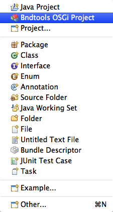
This will open a wizard where we select the template. For this tutorial, it is mandatory to use the OSGi enRoute template since our workspace is not setup for the other templates. The OSGi enRoute templates create specific project types based on the suffix of the project name. In this case we create an application project.
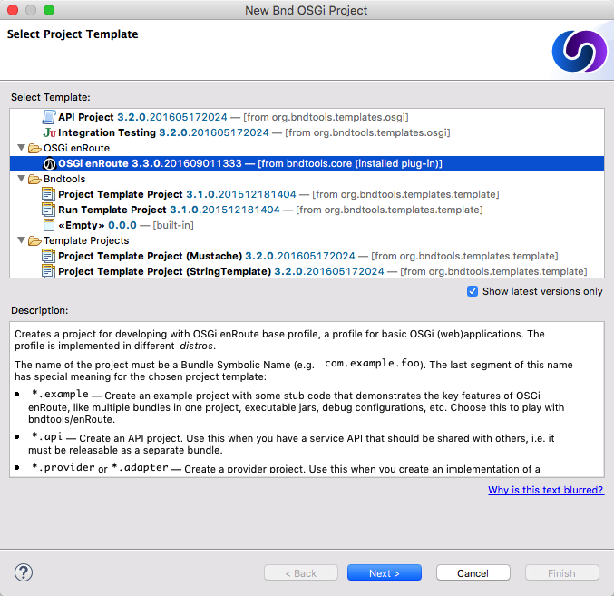
Now naming is important and we’ve found that using Java package like names that use the workspace name as a prefix works best for projects. So we pick com.acme.prime.upper.application. For OSGi enRoute, this .application suffix is crucial since it defines the template we will use. So in the first page we enter this name.
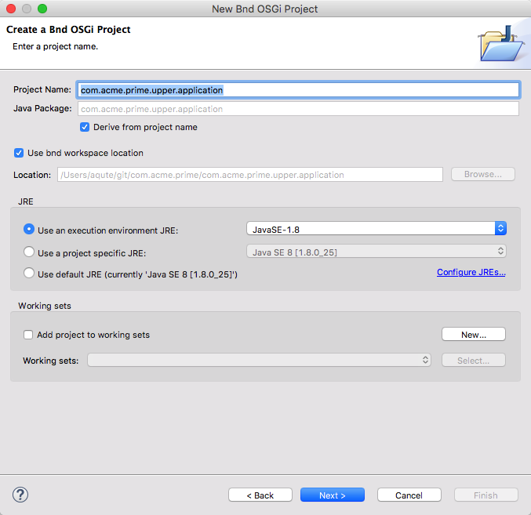
Select Next to go to the Java settings page, which should not change since OSGi enRoute has already set this up.
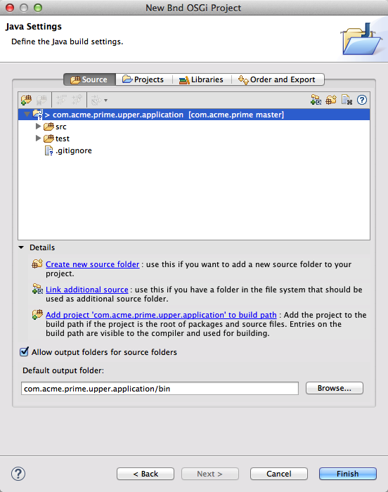
So we can just click Finish and get it over with.
Code
The OSGi enRoute template has already created some source code for us. This source code is making a single page web-application. So double click on the UpperApplication.java source file to open the Java editor to see what kind of code we need.
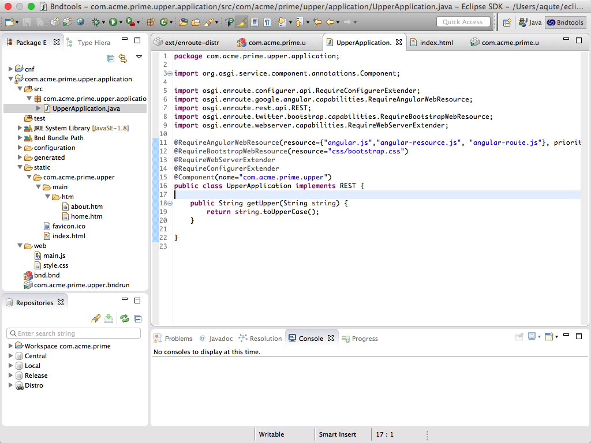
So what’s in there? The first thing you will see is a number of annotations. They ensure that we include the proper web resources for our application like Angular, Bootstrap, and the web extender that serves our static pages. Then we have the component annotation that makes this object a Declarative Services service component. A service component is automatically registered as a service when it implements an interface and it can depend on other services.
This UpperApplication component implements the REST interface and is thus registered as a REST service. The contract of this service indicates that any public method in this class becomes available as a REST end-point. The getUpper method is for the GET method (duh, it starts with get. If you want a POST call it postUpper) and it is mapped from the /rest/upper URI. Since it accepts a single argument, we can specify the word we want to upper case as /rest/upper/<word>. You can find more information about the REST API in the service catalog
REST methods are called from an untrusted external source so they should be protected by a check for authorization.
The OSGi enRoute REST support is intended for calling your app from a browser. If you must implement a complex REST API then it might be better to use JAX-RS. The OSGi is in the process of standardizing a service API for JAX-RS.
HTML Resources
Since this is a single page web app we also need some static resources for the Javascript code and CSS.
The resources from this application are stored in the static directory which is included in our bundle. These resources are directly mapped to the root. That is, a resource with the path static/abc/def will be available as /abc/def. The recommendation is to create a static direction with the application PID name in static.
static/
com.acme.prime.upper
index.html
...
The static/com.acme.prime.upper/index.html contains the single page HTML root. It defines a header, view area, and a footer. The com.acme.prime.upper/main/htm directory contains html fragments that are inserted in the main page depending on the URI. Take a look at these resources and notice how these resources can use macros from the build environment.
Automatic Resources
In the Java code we require several Javascript resources and CSS resources. If you look in the index.html file you see entries like:
<link
rel="stylesheet"
type="text/css"
href="/osgi.enroute.webresource/${bsn}/${Bundle-Version}/*.css">
<script
src="/osgi.enroute.webresource/${bsn}/${Bundle-Version}/*.js">
</script>
OSGi enRoute will automatically insert any CSS or Javascript code in these places that your bundle requires through the annotation. Additionally, at the and it will add any such code in your bundle’s web directory.
We won’t go into more detail now because we just want to see it run! Understanding is a lot easier when you see it all run.
Defining a Runtime
Double click on the com.acme.prime.upper.bndrun file and select the Run tab. In this tab we can express the requirements we have on the runtime. Since we specified our requirements via the annotations, we’re good to go as long as our application is listed in the initial requirements. This is the case by default. You could add any of the other bundles listed on the left side as a requirement but lets assume we’re good for now.
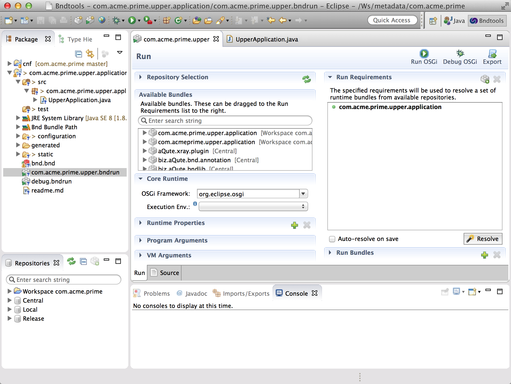
So hit the Resolve button. This will open a dialog that shows you what bundles are required in runtime.
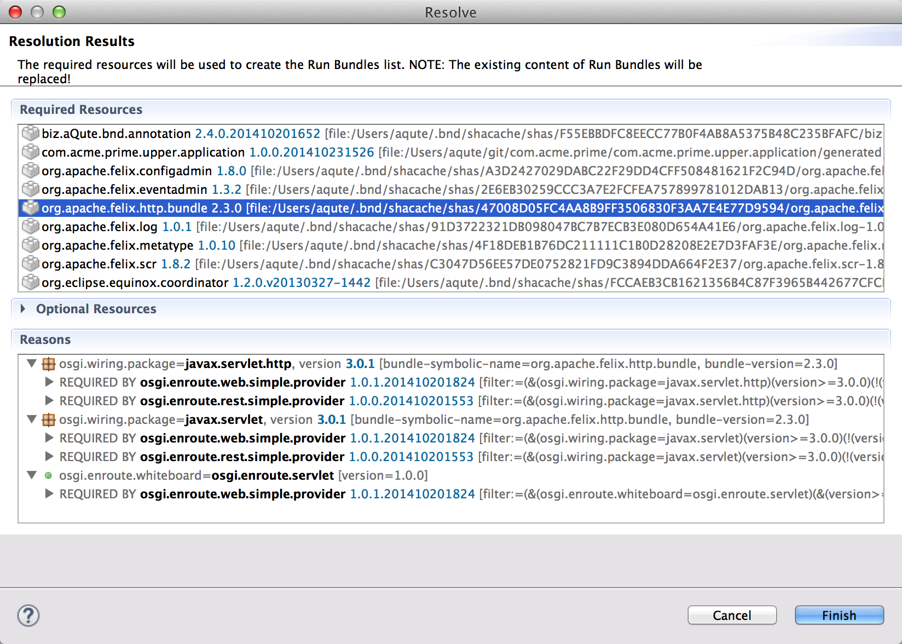
Clicking Finish will set the Run Bundles list. This list is normally not visible. Open it if you’d like to see the resulting bundles.
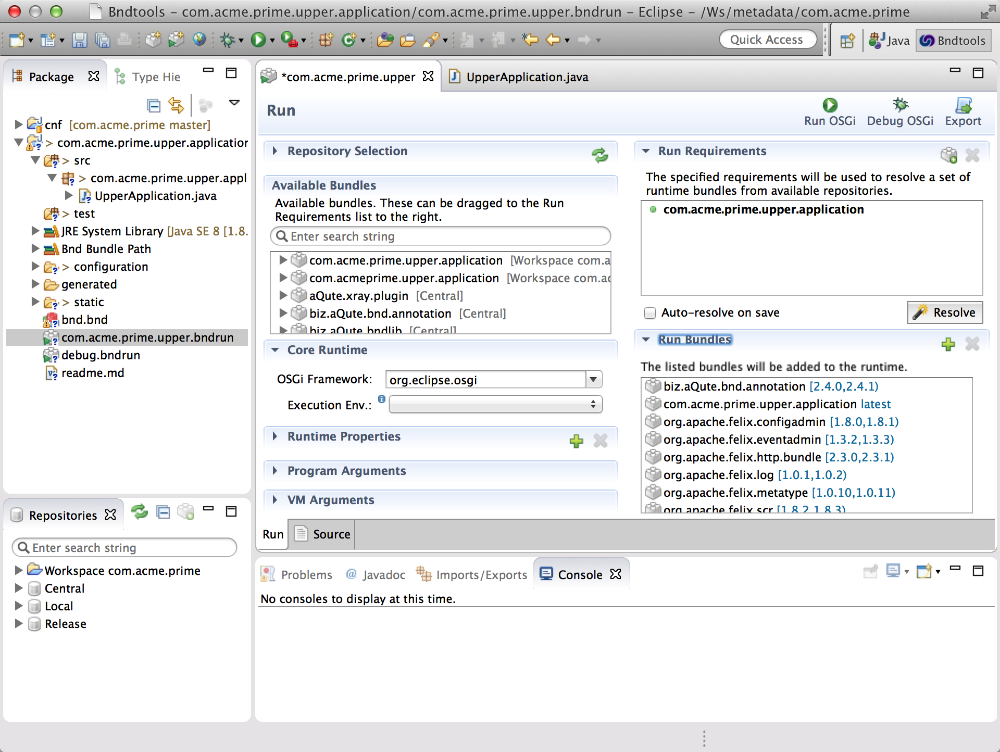
Note that every time you resolve, the -runbundles are overwritten with the new resolution. So never add bundles directly to the -runbundles if you use the resolver!
Save the com.acme.prime.upper.bndrun file and then click on the Debug OSGi button at the right top of the window.
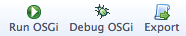
You are app is running and waiting for customers to enjoy the terrific upper casing:
http://localhost:8080/com.acme.prime.upper!
Just click on the ‘To Upper!’ button. This will ask you for a word and then prints the result in the alert bar.
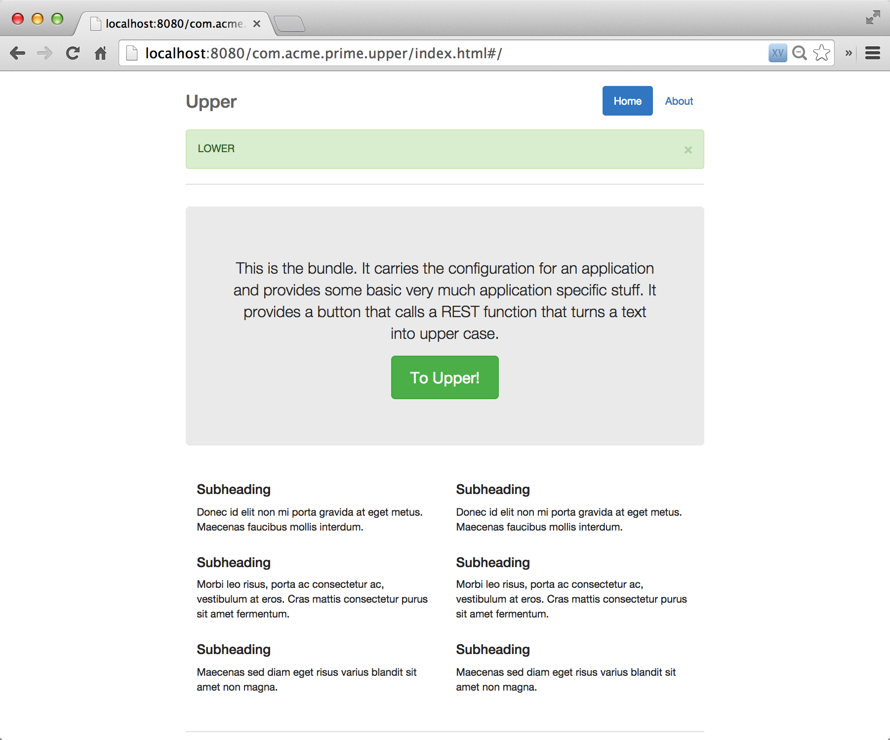
Debugging
Of course you will never need to debug OSGi enRoute projects since they are by definition perfect! However, since perfection isn’t what it used to be, let’s see how we can do some debugging in this project.
You can debug this project as you can any other project in Java. You can set breakpoints and single step. There is one difference with more traditional Java. In our case, we generate a bundle that gets deployed on every change we make. If you change some code and save it, a new bundle will get deployed. If you get more requirements in the bndrun file, those new bundles will be deployed or no longer necessary bundles get removed. This works so well that the dialog box that Eclipse sometimes pops up to tell you it could not patch the class files can be ignored because bnd does not rely on this patching.
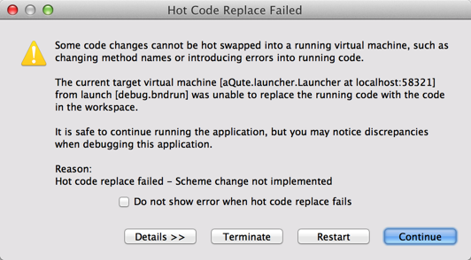
So just click the check-box and dismiss this dialog. That out of the way, let’s change our code from making this upper case code to return lower case code. (Don’t kill the running framework.)
public String getUpper(RESTRequest req, String string) throws Exception {
return string.toLowerCase();
}
If there are Javascript or html fragment changes, you need to refresh the page in the browser to reload. Otherwise you can just click the button on your browser and try it out. You actually rarely have to restart the framework.
OSGi Details
We’re running in a framework but there is not much to see of the framework yet. Obviously, we will need tools to see what bundles are running and what services are registered. Well, every application project has a basic bndrun file and a debug.bndrun file. The debug.bndrun file inherits from the basic one but it adds a lot of support to look inside the framework.
Let’s first kill our running framework. Just click the red button on the console view. Also, if you’ve done some debugging, you might want to return to the Bndtools perspective.
Then double click the debug.bndrun file and select the Run tab, then click on the Resolve button. This gives us a much larger list of bundles. The debug enRoute settings add Web Console, XRay, a web server etc. These are invaluable tools.
This window looks similar to the following picture. Note that there are no listed requirements because they are inherited from the com.acme.prime.upper.bndrun file.
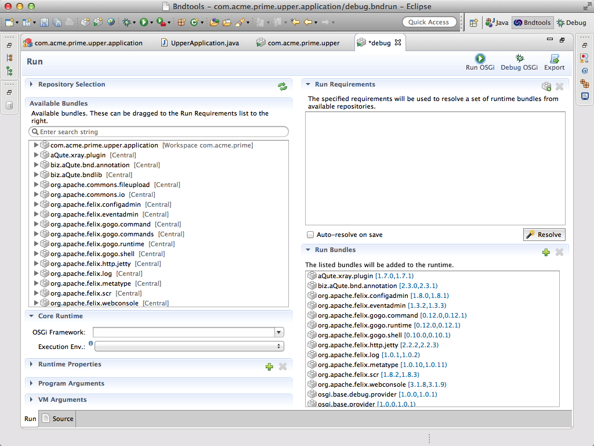
So save the debug.bndrun file and click Debug OSGi. First, this bndrun file will run in trace mode. (You can control this through the -runtrace property that you can see when you double click the debug.bndrun file and select the Source tab.) In trace mode, the launcher provides detailed information about the launch process as well the ongoing update process when there are changed in bndtools.
Anyway, we now have the unsurpassed Web Console running with XRay. Just click on http://localhost:8080/system/console/xray.
If you’re asked for your credentials, the Apache Felix boys have given you an unforgettable user id & password:
User id: admin
Password: admin
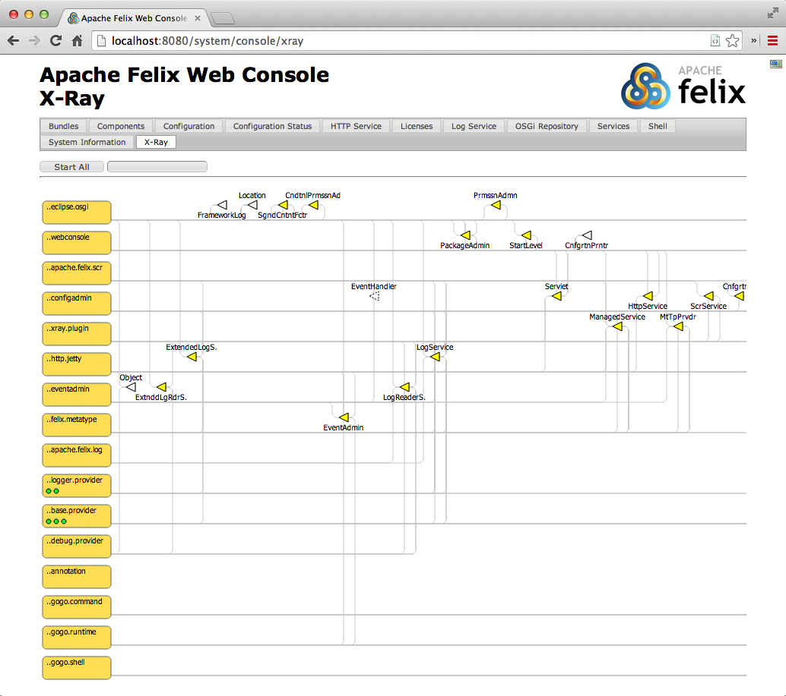
In the full tutorial the possibilities of XRay are further explained.
Creating an Executable
The last part of this quick start is creating an executable JAR out of our application. The export facility of bnd(tools) makes it possible to create a JAR that contains all the dependencies, including the launcher and the framework. This is sometimes hard to understand for enterprise developer, that Java can actually run outside an application server!
Double click on the com.acme.prime.upper.bndrun file and select the Run tab.
At the top of this window you see the following buttons:
The Export button creates an executable JAR out of the specification of its corresponding bndrun file. The execution will be identical to when you run your code inside eclipse. So click on the Export button:
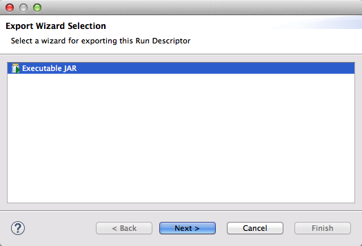
Click on Next to go to the wizard page that requests for the path to save the executable JAR at. Suggest you save it on the desktop under the name com.acme.prime.upper.jar:
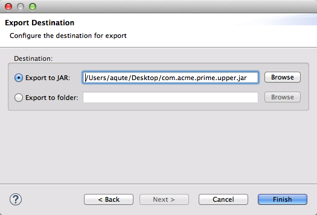
Then we click Finish.
Make sure you have no more frameworks running. Since we have a webserver running we easily run in a conflict for the 8080 port number.
Let’s go to a shell to see if we can execute our code.
$ cd ~/Desktop
$ java -version
java version "1.8.0"
Java(TM) SE Runtime Environment (build 1.8.0-b132)
Java HotSpot(TM) 64-Bit Server VM (build 25.0-b70, mixed mode)
$ java -jar com.acme.prime.upper.jar
We can now go to http://localhost:8080/com.acme.prime.upper and see that our application also runs from the command line.
You can do Control-C in the shell to exit.
$ java -jar com.acme.prime.upper.jar
^C
$